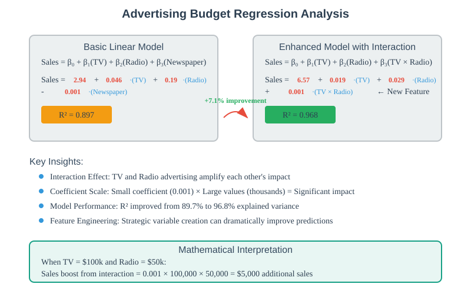
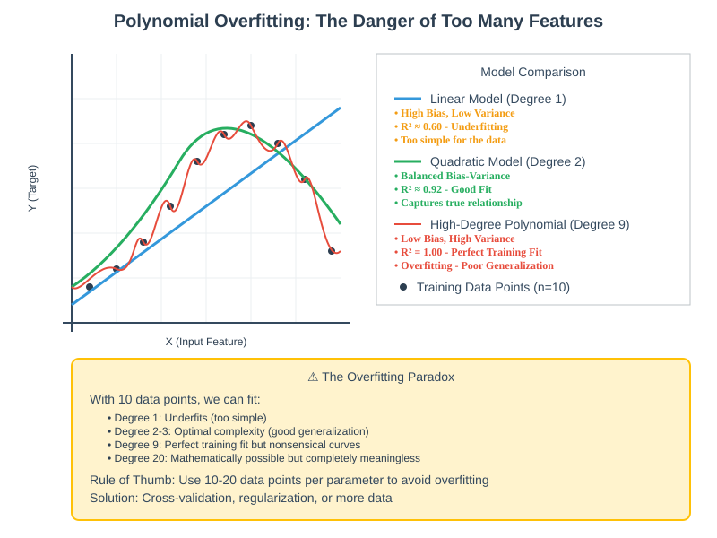
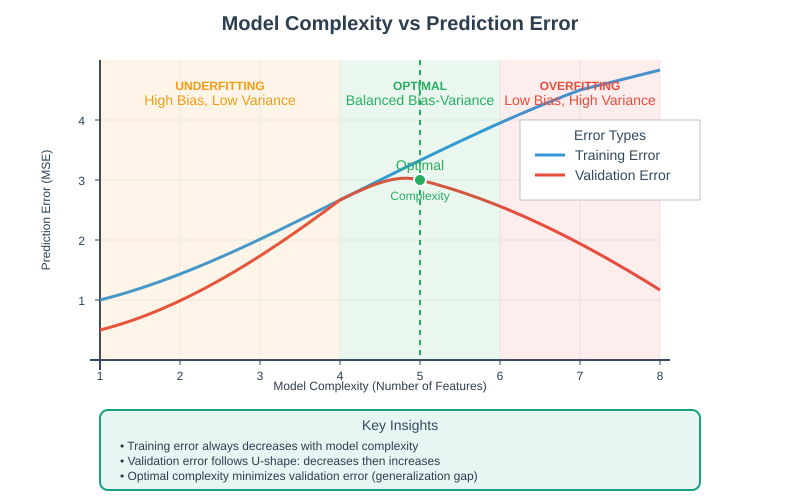
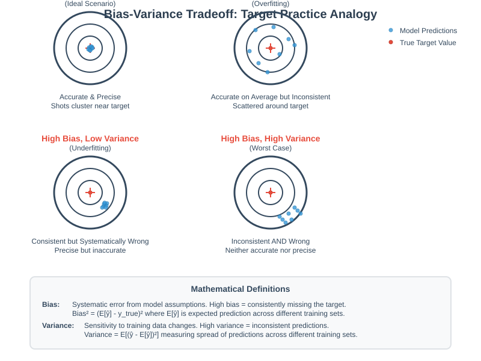
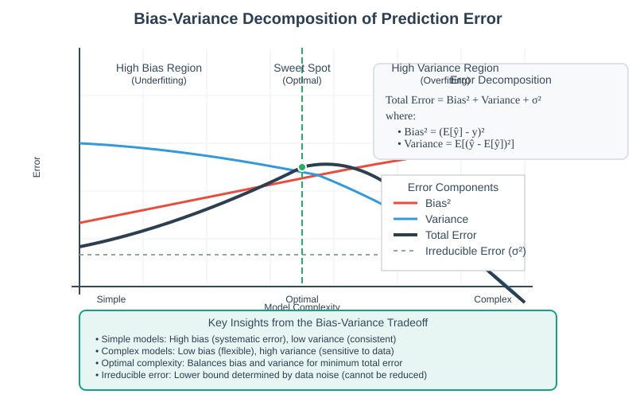

Overfitting and the Bias-Variance Tradeoff
📋 Quick Navigation
- 🎯 Introduction
- 📊 Feature Engineering & Interaction Terms
- ⚠️ The Overfitting Problem
- ⚖️ Understanding Bias-Variance Tradeoff
- 🎛️ Model Complexity Management
- 🛠️ Practical Solutions
- 📚 References & Further Reading
🎯 Introduction
The bias-variance tradeoff is one of the fundamental concepts in machine learning that governs the balance between model complexity and generalization performance. This documentation explores how adding features can improve model performance while simultaneously introducing the risk of overfitting.
Key Learning Objectives
- Understand the relationship between model complexity and prediction accuracy
- Learn to identify and prevent overfitting in machine learning models
- Master the bias-variance decomposition of prediction error
- Implement systematic approaches for optimal feature selection
📊 Feature Engineering & Interaction Terms
The Advertising Budget Example
Consider a regression problem predicting sales based on advertising spending across different media channels. The basic model includes TV, radio, and newspaper advertising budgets:
Sales = β₀ + β₁(TV) + β₂(Radio) + β₃(Newspaper) + ε
Initial Results:
Sales = 2.94 + 0.046·(TV) + 0.19·(Radio) - 0.001·(Newspaper)
R² = 0.897
Introducing Interaction Terms
What if the effect of TV advertising is amplified when combined with radio advertising? This motivates the inclusion of an interaction term:
Sales = β₀ + β₁(TV) + β₂(Radio) + β₃(TV × Radio) + ε
Enhanced Results:
Sales = 6.57 + 0.019·(TV) + 0.029·(Radio) + 0.001·(TV × Radio)
R² = 0.968

Key Insights
- Coefficient Interpretation: The TV × Radio coefficient (0.001) appears small but operates on large values (thousands), making its impact substantial
- Performance Improvement: R² increased from 89.7% to 96.8% with the interaction term
- Feature Scaling: Always normalize variables to comparable ranges for interpretable coefficients
⚠️ The Overfitting Problem
The Temptation of More Features
While adding features improves R², this can lead to problematic overfitting. Consider fitting a polynomial to 10 data points:
- Degree 1 (Linear): Underfits the data, high bias
- Degree 10: Fits perfectly (R² = 1.0) but creates nonsensical curves
- Degree 20: Extreme overfitting with wild oscillations

Training vs. Validation Performance
The graph below illustrates the classic overfitting pattern:

As model complexity increases: - Training error continuously decreases - Validation error initially decreases, then increases (U-shaped curve) - Optimal complexity occurs at the validation error minimum
Why Classical Statistical Tests Fall Short
Traditional statistical procedures for feature selection rely on mathematical assumptions that often fail in real-world scenarios. Modern machine learning approaches prefer:
- Regularization techniques that mathematically discourage overfitting
- Data-driven validation methods that don't rely on distributional assumptions
⚖️ Understanding Bias-Variance Tradeoff
The Mathematical Foundation
For any machine learning model, the prediction error can be decomposed as:
Total Error = Bias² + Variance + Irreducible Error
Where: - Bias: Error from overly simplistic assumptions - Variance: Error from sensitivity to small changes in training data - Irreducible Error: Inherent noise in the data

Visual Understanding: Underfitting vs. Overfitting
Underfitting (High Bias, Low Variance)
When using too few features to model a quadratic relationship with a linear function:
- Systematic errors occur regardless of training data
- Low variance - consistent but wrong predictions
- High bias - model cannot capture true relationship
Overfitting (Low Bias, High Variance)
When using too many parameters relative to available data:
- High sensitivity to individual data points
- Low bias on training data
- High variance - predictions change dramatically with new training samples

Rules of Thumb for Parameter Estimation
- Minimum data requirement: 10-20 independent observations per parameter
- Parameter-to-data ratio: Keep parameters < 10% of training samples
- Cross-validation: Use validation techniques to detect overfitting early
🎛️ Model Complexity Management
Finding the Sweet Spot
The optimal model complexity balances bias and variance to minimize total error:
| Model Complexity | Bias | Variance | Total Error |
|---|---|---|---|
| Too Simple | High | Low | High |
| Optimal | Medium | Medium | Minimum |
| Too Complex | Low | High | High |
Systematic Approaches
1. Regularization Methods
- L1 (Lasso): Feature selection through sparsity
- L2 (Ridge): Coefficient shrinkage
- Elastic Net: Combined L1 + L2 penalties
2. Cross-Validation Techniques
- K-fold CV: Partition data into K subsets
- Leave-one-out CV: Use each point as validation
- Time series CV: Respect temporal ordering
3. Information Criteria
- AIC (Akaike Information Criterion)
- BIC (Bayesian Information Criterion)
- MDL (Minimum Description Length)
Feature Selection Strategies
# Systematic feature selection pipeline
def optimal_feature_selection(X, y):
"""
Data-driven approach to feature selection
avoiding distributional assumptions
"""
# 1. Cross-validation setup
cv_scores = []
feature_counts = range(1, X.shape[1] + 1)
# 2. Progressive feature addition
for n_features in feature_counts:
model = SelectKBest(k=n_features).fit(X, y)
scores = cross_val_score(estimator, X_selected, y, cv=5)
cv_scores.append(scores.mean())
# 3. Find optimal complexity
optimal_features = feature_counts[np.argmax(cv_scores)]
return optimal_features
🛠️ Practical Solutions
Modern Machine Learning Approaches
1. Regularization-Based Methods
Ridge Regression (L2 Regularization)
min ||y - Xβ||² + λ||β||²
Lasso Regression (L1 Regularization)
min ||y - Xβ||² + λ||β||₁
2. Ensemble Methods
- Bagging: Reduce variance through averaging
- Boosting: Reduce bias through sequential learning
- Random Forests: Combine both approaches
3. Early Stopping
- Monitor validation performance during training
- Stop when validation error begins to increase
- Prevents overfitting in iterative algorithms
Implementation Guidelines
Data Preprocessing
# Feature scaling for interaction terms
from sklearn.preprocessing import StandardScaler
scaler = StandardScaler()
X_scaled = scaler.fit_transform(X)
# Create interaction terms
X_interaction = PolynomialFeatures(degree=2, interaction_only=True)
X_enhanced = X_interaction.fit_transform(X_scaled)
Model Selection
# Cross-validation for hyperparameter tuning
from sklearn.model_selection import GridSearchCV
param_grid = {'alpha': [0.001, 0.01, 0.1, 1, 10, 100]}
ridge_cv = GridSearchCV(Ridge(), param_grid, cv=5, scoring='neg_mse')
ridge_cv.fit(X_train, y_train)
optimal_alpha = ridge_cv.best_params_['alpha']
Performance Monitoring
| Metric | Training | Validation | Interpretation |
|---|---|---|---|
| R² | 0.95 | 0.94 | Good fit |
| R² | 0.98 | 0.75 | Overfitting |
| R² | 0.70 | 0.69 | Underfitting |
📚 References & Further Reading
📖 Essential Papers
- Bias-Variance Decomposition (Geman et al., 1992) - Foundational mathematical framework
- Statistical Learning Theory (Vapnik, 1998) - Theoretical foundations
- Regularization and Variable Selection (Tibshirani, 1996) - LASSO methodology
🎓 Comprehensive Textbooks
- Elements of Statistical Learning (Hastie, Tibshirani, Friedman) - Advanced mathematical treatment
- Pattern Recognition and Machine Learning (Bishop) - Bayesian perspective
- Introduction to Statistical Learning (James, Witten, Hastie, Tibshirani) - Practical approach with R
🔧 Implementation Resources
- Scikit-learn User Guide - Comprehensive ML library
- TensorFlow Model Optimization - Deep learning regularization
- MLxtend Feature Selection - Advanced feature selection tools
🚀 Interactive Learning
 Bias-Variance Interactive Demo
Bias-Variance Interactive Demo- Regularization Methods Comparison
🤖 Pre-trained Models
Created with ❤️ for the Machine Learning Community
Last Updated: September 2025